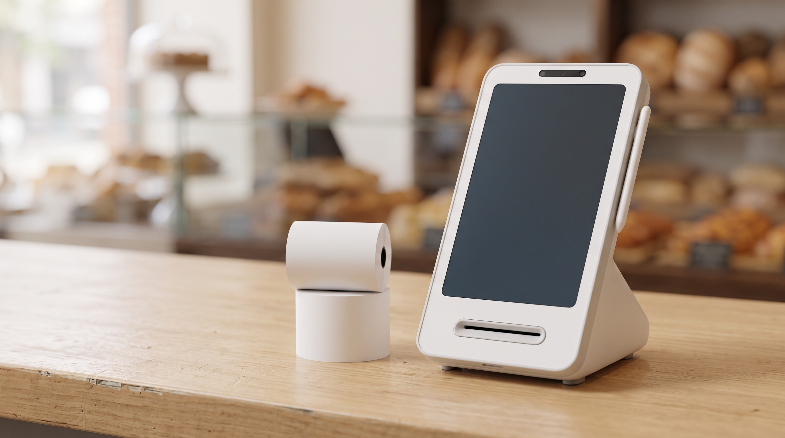

영수증용지, 카운터에서 자꾸 걸리고 흐려질 때 볼 네 곳 — 카드단말기 점검
새 롤을 끼웠는데 글자가 흐리게 나오거나, 뽑을 때마다 걸려서 손으로 뜯게 됩니다. 기계가 고장 났나 싶어 검색해 보신 적 있으실 겁니다. 오늘은 A/S를 부르기 전에 카운터에서 볼 곳을 정리했습니다.
결론부터 말씀드리면, 영수증용지가 흐리거나 걸리는 원인은 대개 규격·감열면 방향·보관 상태 셋 중 하나입니다.
- 규격부터 맞는지 봅니다
폭이 58mm인 기기에 80mm 용지를 넣으면 애초에 물리지 않고, 반대면 한쪽으로 쏠려 걸립니다. 지금 쓰시는 롤의 폭을 자로 한 번만 재 보세요.
- 감열면 방향을 확인합니다
감열지는 한쪽 면에만 글자가 찍힙니다. 롤을 뒤집어 넣으면 백지만 나옵니다. 손톱으로 긁어 보아 회색 선이 남는 면이 바깥을 향하도록 끼웁니다.
- 롤의 지름과 심 크기를 봅니다
용지함보다 지름이 큰 롤을 억지로 넣으면 뚜껑이 덜 닫히고, 그 상태에서 출력이 멈추는 기종이 있습니다. 심 지름도 기기마다 맞는 규격이 있습니다.
- 보관 상태를 의심합니다
감열지는 열과 햇빛에 약합니다. 창가나 온장고 옆에 두면 인쇄 전에 이미 발색이 죽습니다. 서늘한 곳에 세워서, 개봉한 것부터 먼저 쓰세요.
- 롤러에 종이가루가 끼었는지 확인합니다
출력구 쪽에 하얀 가루가 쌓이면 잘 물리지 않고 자꾸 걸립니다. 전원을 끄고 마른 면봉으로 가볍게 닦아내면 상당수는 그 자리에서 해결됩니다.
- 얼마나 사둘지는 회전율로 정합니다
싸게 산다고 한꺼번에 들이면 뒤쪽 롤이 보관 중에 상합니다. 한 달 사용량을 세어 보고 그 범위 안에서 채우는 편이 결과적으로 덜 버립니다.

위 1~5번을 다 확인했는데도 같은 증상이면 출력부 자체를 점검하는 단계입니다. 용지 교체가 잦은 매장이라면 용지함 구조가 단순한 기종이 매일의 손을 덜어 줍니다. 정품 신제품 보증 · 수도권 직영 설치를 원칙으로, 증상만 알려 주시면 방문 점검부터 상담해 드립니다.
영수증 한 장이 안 나오면 그 줄이 통째로 멈춥니다. 위 네 가지만 카운터에 붙여 두셔도 대부분은 그 자리에서 끝납니다.
- 📞 전화상담 1544-7754
- 🌐 홈페이지 https://nwpos.co.kr

📷 인스타그램 팔로우 https://www.instagram.com/nurinetworkspos

▶️ 유튜브 구독 https://www.youtube.com/@nurinetworks
(2026년 8월 기준)